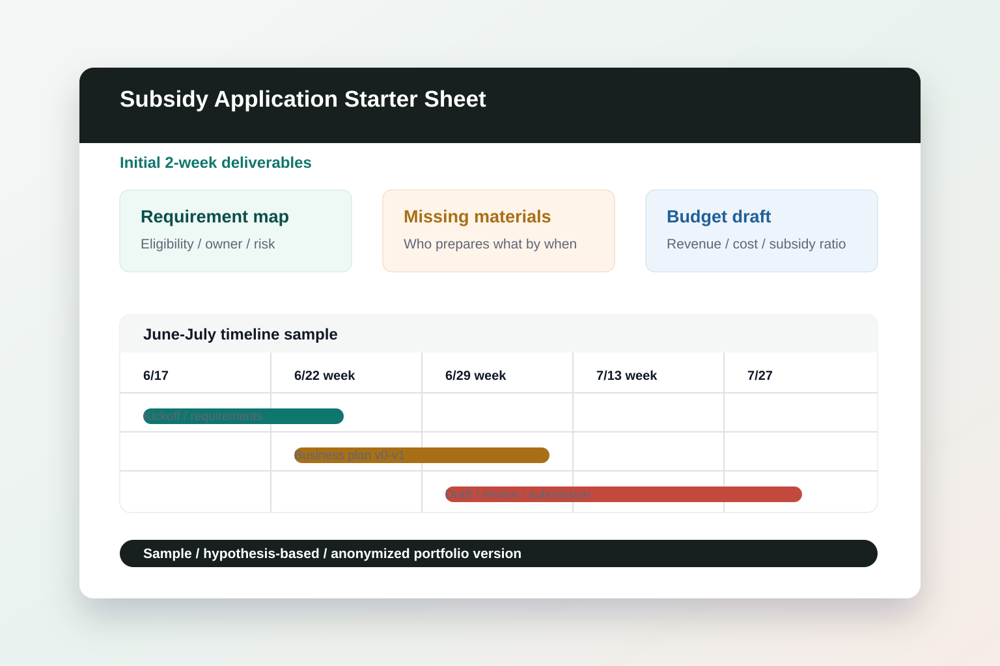

要件対応表
対象制度の要件、申請主体、添付書類、審査観点を1枚に整理します。
Portfolio sample / anonymized
地域の食と体験型ツアーを組み合わせる新規事業を想定し、協議会設立・申請要件・不足資料・資金計画・工程表を、 面談前に議論できる粒度まで整理したサンプルです。

Overview
地域復興に取り組む小規模団体が、地域の食資源と滞在・体験コンテンツを組み合わせた観光事業を立ち上げる想定です。 関係者は本業と並行して参画し、月2回程度のオンラインミーティングとチャット相談で、2026年6月中旬から7月末までに補助金申請を進める前提でした。
公開情報では、復興ビジョンの収集・発信、復興イニシアティブの育成、復興団体のプラットフォームづくりが掲げられていました。 そのため本サンプルでは、単なる書類作成ではなく、複数の事業者・関係者が短期間で判断できる「不足情報リスト」と「要件対応表」を先に置いています。
Demo artifact
以下は、実案件に送った資料の構成をもとにしたポートフォリオ掲載用のサンプルです。内容は仮説ベースであり、対象制度・公募要領・申請主体の確定後に調整します。
対象制度の要件、申請主体、添付書類、審査観点を1枚に整理します。
発注者側で準備が必要な情報を、担当者・期限・確認状態つきで並べます。
ビジョン、対象顧客、提供価値、実施体制、収支前提を申請書の見出しに合わせます。
概算費目、自己資金、補助対象外経費、入金タイミングの確認欄を作ります。
| 確認事項 | 初週で確認する理由 | 面談時の質問 |
|---|---|---|
| 申請主体 | 協議会を新設するか、既存法人で申請するかにより、要件・添付書類・決裁者が変わるため。 | 申請主体の候補と、最終決裁者はどなたでしょうか。 |
| 対象制度 | 補助率、対象経費、締切、審査項目が制度ごとに異なるため。 | 現時点で想定している制度名、または候補リストはありますか。 |
| 関係者の作業時間 | 本業と並行する体制では、ミーティングで決めることと非同期で集めることを分ける必要があるため。 | 週次で確認可能な時間帯と、チャットで回答しやすい担当者を教えてください。 |
| 期間 | 当方の作業 | 発注者側で確認いただくこと | 成果物 |
|---|---|---|---|
| 6/17〜6/21 | 公募要領・申請主体・関係者情報の確認 | 制度候補、決裁者、既存資料の共有 | 要件対応表 / 不足資料リスト |
| 6/22週 | 事業計画骨子と資金計画の枠組み作成 | 提供コンテンツ、参加事業者、概算費用の確認 | 事業計画骨子 v0 / 資金計画たたき台 |
| 6/29週 | 公募要領の正式反映、審査項目への対応整理 | 不足資料の回収、優先順位の判断 | 要件対応表 v1 / 申請書構成案 |
| 7/6〜7/19 | 申請書ドラフト作成、根拠資料の差し込み | 内容確認、収支前提、実施体制の承認 | 申請書ドラフト v1-v2 |
| 7/20〜7/31 | 最終レビュー、提出前チェック、差戻し対応 | 最終決裁、電子申請または提出作業 | 提出版一式 / 次アクションメモ |
| 項目 | 現時点の状態 | 確認する資料 | リスク |
|---|---|---|---|
| 事業目的 | 地域資源を活用した観光事業として整理可能 | 構想メモ、関係者ヒアリング | 復興文脈と収益事業の関係が曖昧だと審査観点に合わせにくい |
| 実施体制 | 複数事業者・支援団体の連携を想定 | 役割分担表、協議会規約案 | 責任者、会計、運営判断の所在が未確定だと申請主体の説明が弱くなる |
| 資金計画 | 概算費目の洗い出しが必要 | 見積書、自己資金、収入見込み | 補助対象外経費と入金タイミングを見落とすと資金繰りに影響する |
Interview questions
補助金申請で最も伝えたい事業成果は、観光誘客、関係人口、地域産業支援のどれを主軸に置きますか。
協議会の立ち上げに向けて、すでに決まっている役割と未定の役割はどこですか。
既に使える写真、事業構想メモ、見積、参加事業者リストはありますか。
月2回のミーティングでは、意思決定とレビューのどちらを優先したいですか。
申請締切までに、内容の精度、関係者合意、添付資料のどこが最も詰まりそうですか。